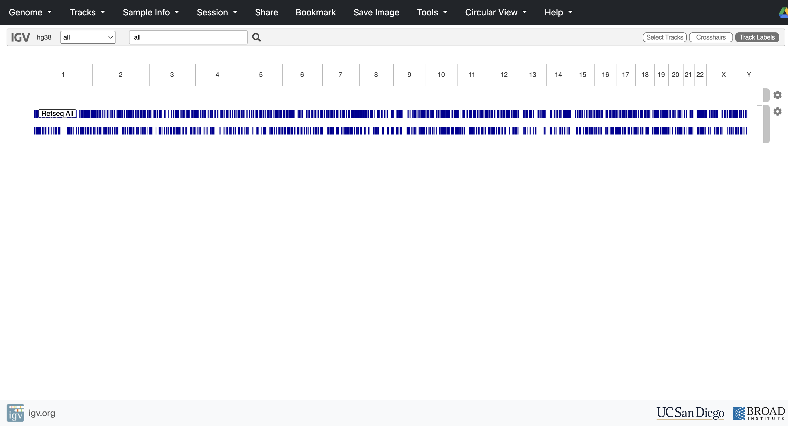
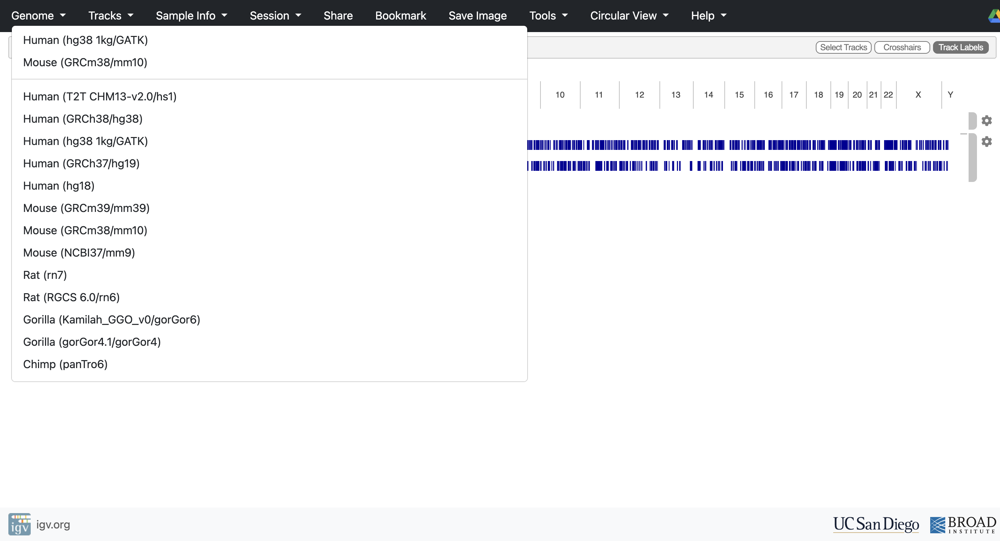
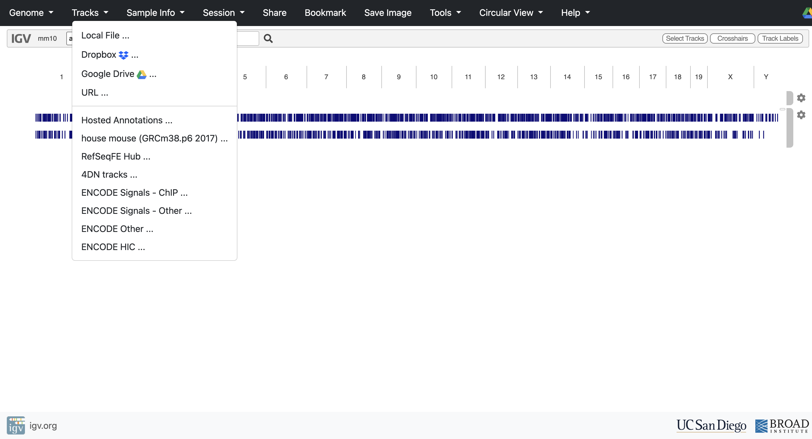
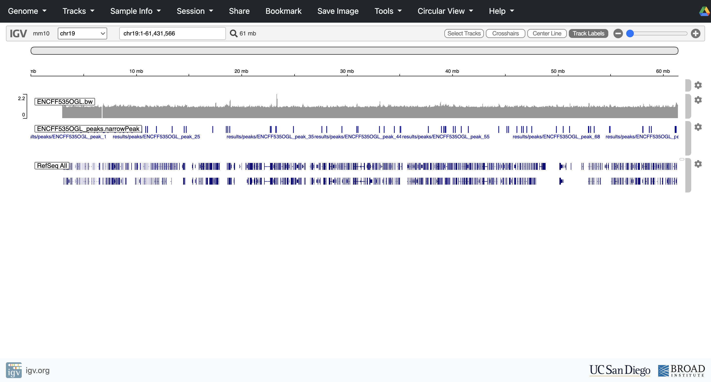

The Concept: The "Zero-Install" Solution
In the "old days" of bioinformatics, visualizing genomes was a headache. It required downloading massive reference files, installing complex desktop software like IGV Desktop, and fighting with Java updates and RAM settings just to open a window.
Today, we can bypass that entire struggle. We will use the IGV Web App, a modern tool that runs entirely in your internet browser (like Chrome, Safari, or Firefox). Think of it as "Google Docs for Genomics"—it provides the full power of a genome browser with zero installation.
Crucially, your data stays with you. Even though the app runs in the cloud, it reads the files directly from your computer's hard drive. You do not need to wait hours to upload your massive files to a server.
Launching the Genome Browser
Open the App
Open your web browser and navigate to:
https://igv.org/app/
Select Your Genome
In the top-left corner, you will see a dropdown menu (likely labeled "Genomes"). Click it and select Mouse (mm10).

Why mm10? Even though our "toy" dataset only contains data for Chromosome 19, the coordinate system we used for alignment was based on the mm10 build of the mouse genome. If you selected a different mouse version (like mm9 or mm39), your peaks would appear in the wrong places (or nowhere at all), because the "addresses" of the genes would be different.
Loading Your Data
Now we populate the empty map with our own scientific discoveries.
Locate Your Files
Open your file manager (Finder on Mac or File Explorer on Windows) and navigate to your project folder (atacseq). You need the two files we generated in the previous chapters:
- The Signal Track:
results/visualization/ENCFF535OGL.bw(This is the "Mountain") - The Peak Calls:
results/peaks/ENCFF535OGL_peaks.narrowPeak(This is the "Verdict")
Drag and Drop
Simply click both files and drag them from your folder directly onto the white space in the web browser window. Two new horizontal tracks will appear in the browser window:
- ENCFF535OGL.bw: Likely appears as a grey or blue histogram (bar chart).
- ENCFF535OGL_peaks.narrowPeak: Likely appears as a row of small blue blocks or bars.
If Drag and Drop Does Not Work
Some browsers or operating systems restrict drag and drop behavior for local files. If your tracks do not appear after dragging, use the manual file loader instead.

Click the Tracks menu in the top left corner of the IGV Web App, then select Local File from the dropdown. A file browser window will open, navigate to your atacseq/results/ folder and select both files one at a time:
- results/visualization/ENCFF535OGL.bw
- results/peaks/ENCFF535OGL_peaks.narrowPeak
The same two horizontal tracks will appear exactly as they would with drag and drop—a grey BigWig histogram and a row of blue narrowPeak blocks. There is no difference in the result between the two loading methods; this is simply an alternative entry point to the same outcome.
The Sanity Check (Verification)
Right now, you are looking at the data from "outer space"—zoomed out to show the entire genome. To verify that your analysis pipeline (Trimming → Alignment → Filtering → Peak Calling) actually worked, we need to zoom in to "street view" and check a specific biological landmark.
Navigate to the Data
In the search bar at the top of the IGV window, type the following and press Enter:
chr19
Why chr19? Remember, to save time and RAM, we only aligned reads to Chromosome 19. The rest of the genome is empty!
Zoom to a Gene
Now, let's find a specific gene to audit our results. Type the following in the search bar and press Enter:
Cyp2c55Cyp2c55 is a cytochrome P450 enzyme belonging to the CYP2C subfamily, located on chromosome 19 in the mouse genome. It is actively expressed in monocytes and macrophages, where it converts arachidonic acid into epoxyeicosatrienoic acids (EETs) lipid mediators involved in inflammatory signaling. Because this gene is transcriptionally active in the exact cell type we sequenced, we expect its promoter region to have open chromatin. This also gives us an early preview of the pathway enrichment results we will see in Chapter 12, where cytochrome P450 and arachidonic acid metabolism are among the top hits.
What You Should See
- The Signal (BigWig Track): Look at the start of the gene (the left side, where the arrow points). You should see a large "mountain" of reads piling up. This pile-up confirms that the Tn5 enzyme was able to access the DNA here frequently. This is the promoter region, and the open chromatin signal confirms the gene is actively regulated in this cell type.
- The Call (NarrowPeak Track): Look directly underneath that mountain. You should see a solid blue bar.This bar represents the statistical decision made by MACS2. It effectively says: "I have calculated the background noise level, and this mountain is statistically significant — it is a real peak."
The Verdict
This visual inspection is the final proof of your analysis.
- If the blue bar perfectly aligns with the grey mountain: Congratulations! Your pipeline is valid. You have successfully transformed raw, noisy sequencing reads into biologically meaningful genomic features.
- If you see mountains but no blue bars: Your peak calling was too strict (MACS2 missed real data).
- If you see blue bars where there are no mountains: Your peak calling was too loose (MACS2 is calling noise as real).
With your results verified, you can now confidently proceed to use these peaks for downstream analysis, such as motif finding or gene annotation.